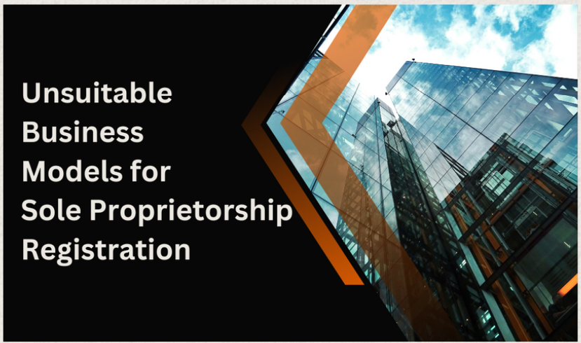

BLOG POST
Sole Proprietorship Registrations
Sole proprietorship registration is pursued to avail legal recognition and benefits such as sales
tax and service tax. This registration involves only one director/owner, and it may not be
perceived as a formal company from an investor's perspective. It may offer advantages such
as easier access to banking services, credibility with customers and suppliers, and clarity on
taxation matters. Sole proprietorship registration is often unsuitable for attracting investments
for expansion purposes. As a result, it is commonly favored by freelancers, fast food centers,
and similar ventures that do not rely on external investments.
ADVANTAGES OF SOLE PROPRIETORSHIP REGISTRATION:
1. Ease of formation :
Very easy and cost effective to register.
2. Ease of maintenance :
Very low legal maintenance required.
3. Clarity on taxation :
Assists in managing sales tax, service tax.
4. Avail legal recognition :
Facilitates obtaining a current bank account.
5. Complete control Over business :
The owner has full control over decision-making and operations without the need to
consult with partners or shareholders.
6. Simplified taxation:
Business income is typically reported on the owner's
personal tax return, simplifying tax compliance. There's no separate corporate
tax filing requirement.
7. Ease of dissolution:
If needed, a sole proprietorship can be easily dissolved
without involving partners or shareholders, making it suitable for short-term or
experimental ventures.
8. No formalities :
Sole proprietors are not required to hold regular meetings, maintain
detailed corporate records, or adhere to other formalities associated with corporations
or partnerships.
9. Ease transaction to other business structures :
if the business grows or changes, sole proprietors can easily transition to other business
structures such as partnerships or corporations, if needed, without significant legal or
administrative hurdles.
10.Minimal government interference:
Sole proprietors have fewer government regulations to comply with compared to larger
businesses, reducing bureaucratic red tape and allowing for greater autonomy in
decision-making
DISADVANTAGES OF SOLE PROPRIETORSHIP REGISTRATION:
1. Not eligible for investment :
Sole proprietors may find it challenging to raise capital compared to larger businesses.
They typically rely on personal funds, loans, or small-scale investments, limiting their ability
to finance growth or expansion.
2.Fewer Legal Advantages:
Sole proprietorships typically have fewer legal advantages compared to other types of
business registrations, such as limited liability protection or formal corporate governance
structures. This can expose the owner to greater legal risks and challenges.
3.personal responsibility for debts of the company:
The owner is personally liable for all debts and obligations of the business. This means
personal assets, such as savings or property, are at risk to satisfy business debts.
4.Unlimited liability :
The owner is solely responsible for all decisions and actions of the business, which can be
overwhelming and stressful, especially during challenging times or when facing legal or
financial issues. because there is no legal distinction between your private assets and
business assets.
5. Difficulty in hiring Talent:
Sole proprietors may find it challenging to attract and retain top talent, as they may not
offer the same benefits, career advancement opportunities, or job security as larger
organizations.
6. Limited Growth Potential:
Sole proprietorships may face limitations in terms of scalability and growth potential.
Without additional resources and expertise, expanding the business beyond a certain
point may be difficult.
7.Tax Disadvantages:
While sole proprietorships offer simplicity in tax reporting, owners may miss out on
certain tax benefits and deductions available to larger businesses, reducing their overall
tax efficiency
BUSINESSES SUITABLE FOR SOLE PROPRIETORSHIP REGISTRATION:
1.Freelancers and Consultants:
Example: Graphic designers, writers, IT consultants.
Reason: Sole proprietorship registration offers simplicity and flexibility for individuals
providing freelance services. These professionals typically operate independently and do
not require extensive capital investment or formal business structures
2.Fast Food Centers and Food Trucks:
Example: Street food vendors, small-scale eateries.
Reason: Sole proprietorship registration is suitable for small food businesses due to its
ease of formation and minimal regulatory requirements. These ventures often operate with
a single owner and do not involve complex operations or large-scale investments.
3.Home-Based Businesses:
Example: Online sellers, home-based bakeries, tutoring services.
Reason: Sole proprietorship registration allows individuals to run businesses from home
with minimal overhead costs and administrative burden. These ventures often start small
and can gradually scale up without the need for external investments or formal business
structures.
These examples showcase how sole proprietorship registration aligns with various business
models and industries in India, offering entrepreneurs the flexibility and autonomy to pursue
their ventures independently.
BUSINESSES MODELS UNSUITABLE FOR SOLE PROPRIETORSHIP REGISTRATION:

1. High-Risk Ventures:
Example: Construction companies, medical practices, manufacturing plants.
Reason: Businesses involving high-risk activities or potential liability issues are unsuitable
for sole proprietorship registration due to the unlimited personal liability of the owner. In
these industries, forming a limited liability entity such as a corporation or LLC provides
better protection for personal assets.
2.Tech Startups:
Example: Software development firms, tech startups, IT consulting agencies.
Reason: Tech startups often require significant capital investment, intellectual property
protection, and complex ownership structures involving multiple founders or investors.
Sole proprietorship registration lacks the flexibility and scalability needed for these
ventures, making incorporation a more suitable choice.
3.Retail Chains:
Example: Franchise outlets, multi-location retail stores, supermarket chains.
Reason: Retail businesses with multiple locations or franchise operations require
centralized management, corporate governance structures, and formalized ownership
arrangements. Sole proprietorship registration lacks the ability to accommodate these
complexities, making incorporation or partnership more appropriate
4.Professional Services Firms:
Example: Law firms, accounting practices, architectural firms.
Reason: Professional services firms often have regulatory requirements, ethical
considerations, and liability concerns that necessitate a more formal business structure.
Incorporating as a professional corporation or forming a partnership provides legal
protections and facilitates compliance with industry regulations.
These examples demonstrate the importance of choosing the right business structure based
on the specific needs, risks, and growth potential of the venture. While sole proprietorship
registration offers simplicity and ease of formation, certain businesses require the legal
protections, flexibility, and scalability provided by other business structures such as
incorporation or partnership.
CONDITIONS FOR SOLE PROPRIETORSHIP REGISTRATION:

1. High-Risk Ventures:
Example: Construction companies, medical practices, manufacturing plants.
Reason: Businesses involving high-risk activities or potential liability issues are unsuitable
for sole proprietorship registration due to the unlimited personal liability of the owner. In
these industries, forming a limited liability entity such as a corporation or LLC provides
better protection for personal assets.
2.Tech Startups:
Example: Software development firms, tech startups, IT consulting agencies.
Reason: Tech startups often require significant capital investment, intellectual property
protection, and complex ownership structures involving multiple founders or investors.
Sole proprietorship registration lacks the flexibility and scalability needed for these
ventures, making incorporation a more suitable choice.
3.Retail Chains:
Example: Franchise outlets, multi-location retail stores, supermarket chains.
Reason: Retail businesses with multiple locations or franchise operations require
centralized management, corporate governance structures, and formalized ownership
arrangements. Sole proprietorship registration lacks the ability to accommodate these
complexities, making incorporation or partnership more appropriate
4.Professional Services Firms:
Example: Law firms, accounting practices, architectural firms.
Reason: Professional services firms often have regulatory requirements, ethical
considerations, and liability concerns that necessitate a more formal business structure.
Incorporating as a professional corporation or forming a partnership provides legal
protections and facilitates compliance with industry regulations.
These examples demonstrate the importance of choosing the right business structure based
on the specific needs, risks, and growth potential of the venture. While sole proprietorship
registration offers simplicity and ease of formation, certain businesses require the legal
protections, flexibility, and scalability provided by other business structures such as
incorporation or partnership.
REQUIRED DOCUMENTS FOR SOLE PROPRIETORSHIP REGISTRATION:
1. Identity and Address Proof of the Proprietor:
When registering for sole proprietorship, you'll need to provide proof of your identity and
residential address. You can choose any one of the following documents to fulfill this
requirement:
Aadhaar card
Passport
Voter ID card
Driving license
PAN card
Additionally, you'll need to provide proof of your residential address. Acceptable documents
for this purpose include:
Utility bills (such as electricity bill, water bill, etc.) not older than two months
Property tax receipt
Rental agreement (if the business premise is rented)
Please note that you are required to submit only one document for proof of identity and one
document for proof of address. Ensure that the chosen document is current, valid, and
accurately represents your details.
2. Proof of Business Address:
For proof of the business address, you may need to submit documents such as:
Rental agreement (if the business premise is rented)
Property tax receipt
No objection certificate (NOC) from the property owner (if applicable)
Ensure that the document you provide accurately reflects the address where the business will
be conducted.
3. PAN (Permanent Account Number) of the Proprietor:
You'll need to provide your PAN card or PAN allotment letter as proof of your PAN. This is
necessary for taxation purposes and is required to open a bank account in the name of the
business.
4. Bank Account Details:
Submit a bank statement or canceled cheque of your personal bank account. This will be used
to open a separate bank account for the business and manage financial transactions.
5. Business Name and Nature of Business:
Provide the proposed business name and a description of the nature of business activities.
Ensure that the business name is unique and complies with the naming guidelines specified by
the relevant authorities.
6. GST Registration (if applicable):
If the annual turnover of your business exceeds the threshold set by the government, you'll
need to register for GST (Goods and Services Tax). Submit the GST registration certificate if
applicable.
7. Additional Documents (if required):
Depending on the nature of your business and local regulations, you may need to submit
additional documents such as licenses, permits, or approvals. Check with the relevant
authorities to determine if any additional documentation is needed for your specific business.